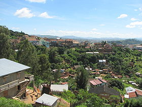

Fianarantsoa
|
|
Cet article est une ébauche concernant Madagascar.
Vous pouvez partager vos connaissances en l’améliorant (comment ?) selon les recommandations des projets correspondants.
Consultez la liste des tâches à accomplir en page de discussion. |
| Fianarantsoa | ||
|---|---|---|
|
||
|
|
||
|  | ||
| Administration | ||
| Pays | ||
| Région | Haute Matsiatra | |
| Province | Fianarantsoa | |
| District | Fianarantsoa I | |
| Géographie | ||
| Coordonnées | ||
| Démographie | ||
| Population | 144,225 hab. (2001) | |
| Localisation | ||
|
|
||
{kind=link}
{kind=link}
{kind=link}
{kind=link}
Fianarantsoa est une ville située au sud-est de l'ile de Madagascar, capitale de la province du même nom.
Centre commercial et carrefour routier, Fianarantsoa est reliée par le chemin de fer à Manakara sur la côte est. La région avoisinante, située à 1 200 mètres d'altitude sur les hauts plateaux de la région du Bétsiléo, cultive partiellement le tabac, le riz, le raisin et le café. Elle possède également des fermes spécialisées dans l'élevage du bétail, des savonneries et des huileries. Les industries locales reposent sur le traitement du riz, le conditionnement de la viande de bœuf, la fabrication de briques et le travail du bois. C'est aussi ici que l'on produit le meilleur vin
de l'île. Les cépages, importés par des Français et des Suisses,
donnent des vins rouges, rosés et blancs au goût assez fruité, qui se
dégustent dans les caves des vignobles entourant la ville.
Ancien quartier général des missionnaires chrétiens, elle est considérée comme le centre intellectuel de Madagascar et on y trouve de nombreuses librairies.
Sommaire[masquer] |
Transport ferroviaire[modifier]
La ligne vers Manakara[modifier]
Une des dernières michelines au monde circule entre Fianarantsoa et Manakara, sur la ligne Fianarantsoa Côte Est (FCE).
{kind=link}
{kind=link}
Personnalités[modifier]
- Pierrot Men (1954- ), photographe malgache.
Archevêché[modifier]
Voir aussi[modifier]
Galerie[modifier]
-
Rue de Fianarantsoa -
Gare ferroviaire
{kind=link}
{kind=link}
{kind=link}
{kind=link}
Bibliographie[modifier]
- Guide Évasion Madagascar, Hachette Livre, 2006, 304 p. (ISBN 2-01-240499-5).
- Madagascar, Encyclopédies du Voyage, Gallimard Loisirs, 2005, 324 p. (ISBN 2-74-241572-6).
{kind=link}